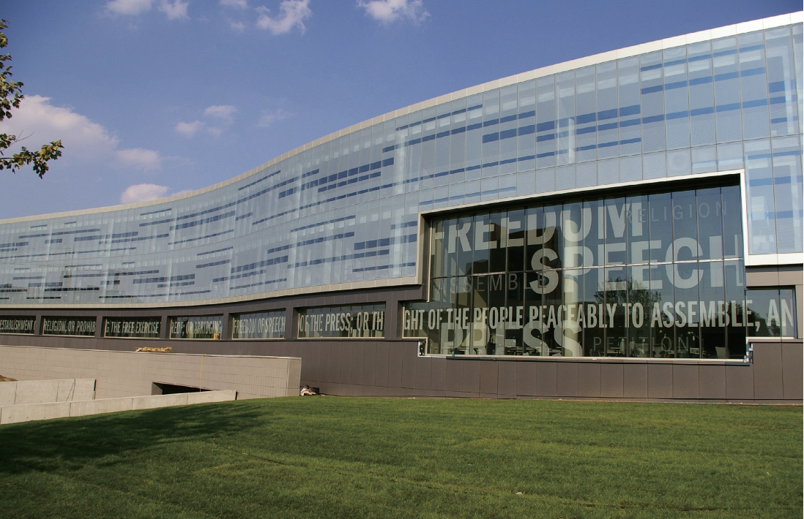

Overview
Newhouse III at Syracuse University presents unique environmental challenges due to its curtain wall glass facade — leading to heat gain in summer and light loss in winter. This analysis proposes a double-skin facade system divided into three zones, combining seasonal adjustability with structural and aesthetic rhythm.
The structural system adopts a ribbon-and-brace grid complemented by concrete. Using Galapagos evolutionary optimization, facade configurations were tested across six typologies to identify the optimal balance between thermal performance, energy efficiency, and daylighting. HVAC design integrates an air-based convection system ensuring climate control across all four floors.
Full Documentation